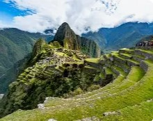
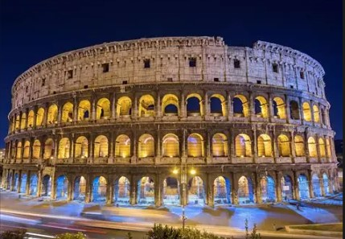
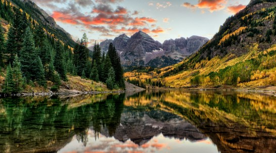

Ubicado a 2,430 metros de altura en un paraje de gran belleza, en medio de un bosque tropical de montaña, el santuario de Machu Picchu fue probablemente la realización arquitectónica más asombrosa del Imperio Inca en su apogeo. Sus murallas, terrazas y rampas gigantescas dan la impresión de haber sido esculpidas en las escarpaduras de la roca, como si formaran parte de ésta.
Leer más
La construcción del Coliseo comenzó en el año 72 bajo el régimen de Vespasiano y terminó en el año 80 durante el mandato del emperador Tito. Tras la finalización de la construcción el Coliseo se convirtió en el mayor anfiteatro romano, con unas dimensiones de 188 metros de longitud, 156 metros de anchura y 57 metros de altura.
Leer más
Esculpido por el cauce del río Colorado durante más de 2,000 millones de años, el Gran Cañón cuenta con unas dimensiones increíbles, 446 kilómetros de longitud y una altura máxima de la garganta de 1,500 metros.
Leer más